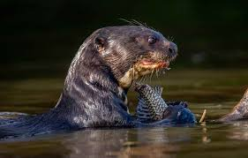

Ariranha
Pteronura brasiliensis

A ariranha (Pteronura brasiliensis) é o maior tipo de lontra, encontrada em rios e lagos da América do Sul. Ela pode medir até 1,8 metros e vive em grupos familiares. Excelente nadadora, se alimenta principalmente de peixes. É muito vocal e comunicativa. A espécie está ameaçada de extinção devido à perda de habitat e caça ilegal.
Habitat
Vive em rios, lagos e pântanos das regiões tropicais da Amazônia, Pantanal e Cerrado, preferindo áreas com águas calmas e margens densas de vegetação.
Reprodução
A reprodução da ariranha ocorre geralmente entre a estação seca e o início das chuvas. Após um período de gestação de cerca de 65 a 70 dias, a fêmea dá à luz de 1 a 5 filhotes, em tocas próximas à água. Os filhotes nascem cegos e dependem dos pais e do grupo, que os protegem e cuidam até que possam nadar e caçar, por volta dos 3 meses de idade.
Peso
Pode pesar até 32 kg
Altura
É a maior espécie de lontra, medindo de 1,5 a 1,8 metros de comprimento.

Curiosidade
ariranha é que ela é um dos poucos mamíferos que utiliza ferramentas. Em algumas regiões, foi observado que elas usam pedras para quebrar cascas de frutos e sementes duras, mostrando um comportamento complexo e adaptativo.

Os texto inspirados são dos sites
Toda Matéria, Mundo ecologia e Portal Amazônia.